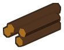

0брёвенВыбрано 0
«Половина» — половина всех, «½ группы» — половина одной. «Приказ» — затем клик по карте.
Стройка тратит брёвна: их приносят лесорубы из лагеря.
Игра не останавливается: деревня работает и за этой доской.
Код: —
связь с сервером…
Ждём остальных. Все нажимают «Готов», затем хост нажимает «Начать игру».
Ратуша врага разрушена.
остров, деревня и человек с топором
Один и тот же сид всегда даёт один и тот же остров: понравившийся можно запомнить и вернуться на него.